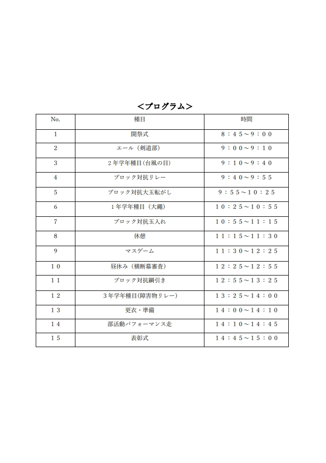
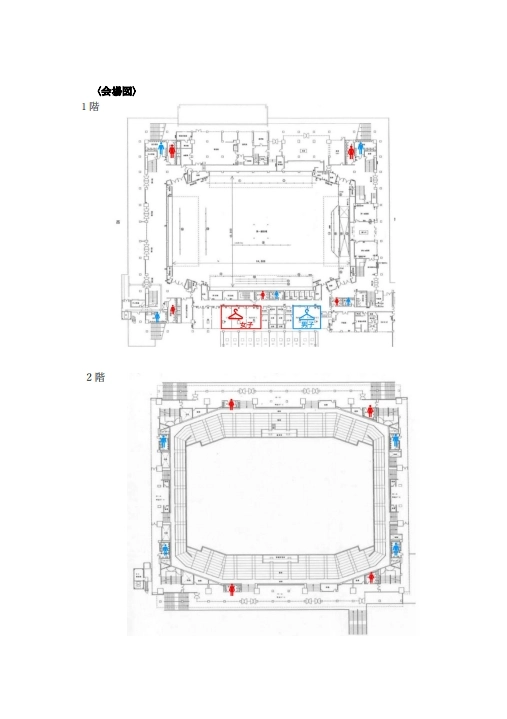

体育祭は、保護者のみ限定公開しています。


開場時間は08時20分です。それ以前に入場することはできないので注意してください。
室内履きは不要です。土足のままご覧いただけます。
クリックで詳細を見ることが出来ます。
102HR 201HR 303HR
ブロックテーマ：あかいいだけじゃだめですか？（かわいいだけじゃだめですか？）
マステーマ：WARRIORS
マス紹介
こんにちは赤マス長です!「赤」といえば
「強さ」「情熱」を連想しますよね！私たち赤マスはそんな強さや情熱をもった「戦士」
をイメージして踊ります！力強さの中にも優しさがあるような私たちの演技をご覧ください！
108HR 206HR 305HR
ブロックテーマ：一橙両断（いっとうりょうだん）
マステーマ：Welcome to the Heartbeat Show
マス紹介
それは、ひとりでは生まれないリズム。全員でひとつの“鼓動”を生み出し、最高のパフォーマンスをお届けします。さあ、観客までもオレンジ色に染め上げる、私たちの
Heartbeat Show へようこそ！
107HR 209HR 302HR
ブロックテーマ：黄色戦士（セーラームーン）
マステーマ：LUZ PIRATA
マス紹介
Yo Ho！！おれらの船へようこそ！ここでは「LUZ
PIRATAｰ海賊の光」をモットーに40人で明るく力強く冒険しているぜ。眩しいからといっておれらから目を背けるなよ？瞬き厳禁！一緒に楽しもうぜ！！
106HR 203HR 301HR
ブロックテーマ：全緑疾走（ぜんりょくしっそう）
マステーマ：Fairy Tale
マス紹介
大切なのは、信じること一華やかで恐ろしい妖精達が、あなたを物語の世界へいざないます。夜が明け、眠りから覚めれば、心のままに飛んでいく….時間を忘れるほどの圧倒的な演技をご覧あれ！You
can fly！
101HR 205HR 308HR
ブロックテーマ：奇蒼天外（きそうてんがい）
マステーマ：ÉCLAT:LIBERTY
マス紹介
閉ざされた青い世界から抜け出す。自由の光に導かい、シンデレラのような一歩を踏み出し、新たな自分が解き放たれる。輝かしい未来に向けて自分の翼を今、大きく広げ、羽ばたいてゆく。ECLAT:LIBERTY
103HR 207HR 309HR
ブロックテーマ：紫電一閃（しでんいっせい）
マステーマ：Stained by the devil
マス紹介
悪魔達の宴へようこそ。どうやらヴィランズの世界へ迷い込んでしまったようですね。怯える必要はありません。私たちがあなたを悪魔に染め上げてみせましょう。そろそろパーティーの始まりです。どうぞお楽しみください。
109HR 208HR 306HR
ブロックテーマ：桜梅桃李（おうばいとうり）
マステーマ：気韻生動
マス紹介
人生は舞踊のようだ。どこか激しくも繊細で、またそれに絶対的な正しさなんてない。我々は、躍動感と生命感に溢れたパフォーマンスで会場を沸かせます。さあ、感じてください。ピンクマスの“気韻生動(きいんせいどう)“を…
105HR 202HR 307HR
ブロックテーマ：黒士無双（こくしむそう）
マステーマ：Black Kingdom
マス紹介
黒マスのテーマである「Black
Kingdom」は、光と闇が交錯する幻想的な世界。踊り手一人ひとりが自分の世界を築くパフォーマンスで表現する、暗闇の中に輝く“黒の王国”の物語をぜひのぞいていってください！
104HR 204HR 304HR
ブロックテーマ：白鳳乱舞
マステーマ：Contrast
マス紹介
白は、全てを映し出す。そこに影が落ちれば、輪郭が際立つ。光が差せば、世界が動き出す。まっさらな舞台に立ち、感情を色に変えて、リズムに乗せて、表現する。白が白でなくなる瞬間――あなたも一緒に。
各競技アイコンをクリックすると、詳細ルールを見ることができます。
体育祭は終了しました！
放送されなかった競技もこちらから確認可能です。